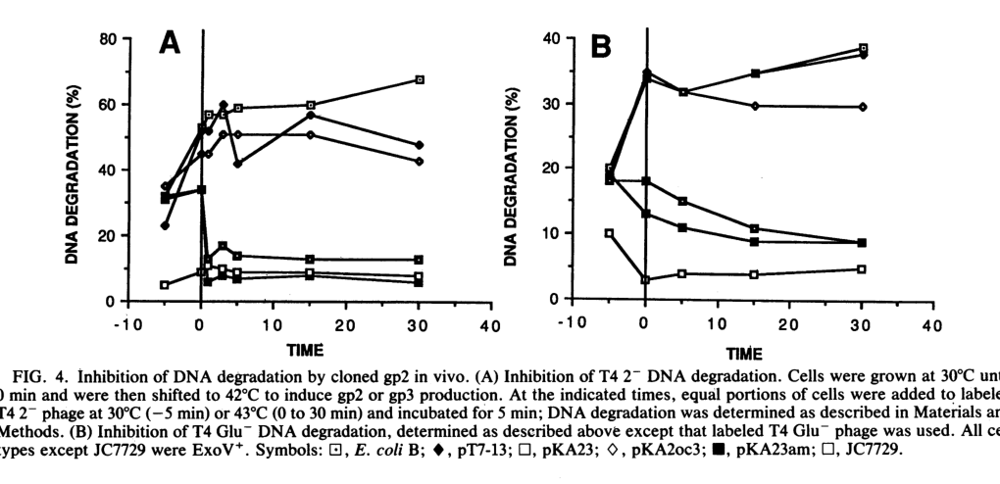

TODO: Add description for P15076
| GO Term | Evidence | Action | Reason |
|---|---|---|---|
|
GO:0052031
symbiont-mediated perturbation of host defense response
|
IEA
GO_REF:0000043 |
PENDING |
Summary: TODO: Review this GOA annotation
|
|
GO:0052170
symbiont-mediated suppression of host innate immune response
|
IEA
GO_REF:0000043 |
PENDING |
Summary: TODO: Review this GOA annotation
|
|
GO:0099016
symbiont-mediated evasion of DNA end degradation by host
|
IEA
GO_REF:0000043 |
PENDING |
Summary: TODO: Review this GOA annotation
|
The research report should be a detailed narrative explaining the function, biological processes, and localization of the gene product. Citations should be given for all claims.
You should prioritize authoritative reviews and primary scientific literature when conducting research. You can supplement
this with annotations you find in gene/protein databases, but these can be outdated or inaccurate.
We are specifically interested in the primary function of the gene - for enzymes, what reaction is catalyzed, and what is the substrate specificity? For transporters, what is the substrate? For structural proteins or adapters, what is the broader structural role? For signaling molecules, what is the role in the pathway.
We are interested in where in or outside the cell the gene product carries out its function.
We are also interested in the signaling or biochemical pathways in which the gene functions. We are less interested in broad pleiotropic effects, except where these elucidate the precise role.
Include evidence where possible. We are interested in both experimental evidence as well as inference from structure, evolution, or bioinformatic analysis. Precise studies should be prioritized over high-throughput, where available.
Enterobacteria phage T4 gene 2 encodes gp2 (historically also called gp64), a small, highly basic virion-associated protein that protects the linear T4 dsDNA termini from degradation by host exonuclease V (ExoV; RecBCD complex) immediately upon injection into the host cytoplasm. Experimental evidence supports a mechanism in which gp2 acts at/near the DNA ends and the head–tail junction (end occlusion/binding), rather than functioning primarily as a catalytic inhibitor of RecBCD. Gp2 additionally contributes to efficient head-to-tail joining during morphogenesis and can be reconstituted into infectious particles using recombinant protein in vitro. (lipinska1989cloningandidentification pages 1-1, wang2000bacteriophaget4selfassembly pages 1-2, wang2000bacteriophaget4selfassembly pages 1-1)
In E. coli, the RecBCD (ExoV) enzyme is a potent ATP-dependent nuclease/helicase that initiates degradation from free double-stranded DNA ends. For linear phage genomes, this creates strong selection for strategies that block or evade RecBCD access.
In the T4 system, gp2 is best defined functionally as a virion-associated DNA-end protection factor that prevents RecBCD/ExoV from engaging the incoming linear phage genome ends. Lipińska et al. directly demonstrated that gp2 (from a cloned gene) can protect T4 dsDNA ends from ExoV action in vivo. (lipinska1989cloningandidentification pages 1-1, lipinska1989cloningandidentification pages 8-9)
Wang et al. show gp2 is also required for efficient head-to-tail (H–T) joining during in vitro reconstitution: heads from gene 2 amber mutants require added recombinant gp2 for H–T joining, and reconstituted particles exhibit reduced ability to plaque under conditions requiring ExoV protection. (wang2000bacteriophaget4selfassembly pages 1-1)
Gene 2 mutants show pleiotropic defects attributable to the absence of terminal protection and morphogenetic roles:
* Incoming DNA degradation by host ExoV/RecBCD, leading to reduced burst size and failure to grow in ExoV+ hosts; restriction is suppressed in recBC (ExoV)-negative hosts, consistent with the RecBCD-targeted phenotype. (wang2000bacteriophaget4selfassembly pages 1-1, lipinska1989cloningandidentification pages 1-1)
* Morphogenesis defects, including impaired head filling and tail attachment/H–T joining. (lipinska1989cloningandidentification pages 1-1, wang2000bacteriophaget4selfassembly pages 1-1)
Lipińska et al. used radiolabeled infecting DNA and measured degradation into acid-soluble fragments; after induction of cloned gp2, infecting DNA degradation was inhibited, demonstrating gp2-dependent end protection in vivo. The experimental time-course curves are shown in Figure 4. (lipinska1989cloningandidentification media 07ef0b2d, lipinska1989cloningandidentification pages 8-9)
Wang et al. reconstituted infectious phage from components and showed recombinant gp2 provides measurable rescue:
* Addition of recombinant gp2 increased total infective phage titer by ~150–200-fold and a phenotypic ExoV-protected titer by up to ~500-fold in some assays. (wang2000bacteriophaget4selfassembly pages 4-5)
* Reported maximal yields included ~2.5 × 10^9 phage/mL total and ~0.3 × 10^8 phage/mL phenotypic ExoV-protected (“phenotypic-21”) particles. (wang2000bacteriophaget4selfassembly pages 4-5)
* Only ~15% of particles reconstituted with recombinant gp2 could grow on an ExoV+ indicator in one assay; in another context, ~10% plaque formation on ExoV+ is reported for reconstituted particles. (wang2000bacteriophaget4selfassembly pages 4-5, wang2000bacteriophaget4selfassembly pages 1-1)
* Historical quantitation in mutant infections reported ~40 full heads/cell, ~20 empty heads/cell, ~0.07 infective phage/cell, and ~40 killer particles/cell, illustrating severe fitness reduction despite particle production. (wang2000bacteriophaget4selfassembly pages 1-1)
Within the retrieved 2023–2024 materials available here, there were no new peer-reviewed structural or mechanistic studies specifically updating T4 gp2 beyond the established end-protection model and classic T4 experimental literature (1989; 2000). Consequently, current understanding of gp2 remains anchored in these foundational studies. (lipinska1989cloningandidentification pages 8-9, wang2000bacteriophaget4selfassembly pages 7-7)
A 2023 therapeutic-oriented dissertation-like source lists T4 gp2 as an example of a phage strategy to evade host defense, stating that T4 gp2 binds free-ended phage DNA and blocks RecBCD access; the context is descriptive (host-defense evasion) rather than providing new experimental data or an engineered implementation. (aaron2023isolationandcharacterization pages 27-30, aaron2023isolationandcharacterizationa pages 27-30)
Although gp2 is conceptually relevant to engineering phage–host interactions (e.g., improving stability of linear DNA in RecBCD+ hosts), the retrieved recent applied source that mentions gp2 does not describe gp2-based therapeutic products, delivery strategies, dosing, or clinical/industrial implementation pathways. (aaron2023isolationandcharacterization pages 27-30, aaron2023isolationandcharacterizationa pages 27-30)
The retrieved primary studies characterize gp2 primarily by genetics, biochemical behavior (basicity), and functional assays; no high-resolution structure, catalytic motifs, or domain architecture are provided in these sources. The most specific mechanistic localization is association with the DNA terminus at the head–tail junction/head vertex, inferred from genetic/functional behavior and reconstitution experiments. (wang2000bacteriophaget4selfassembly pages 1-2, wang2000bacteriophaget4selfassembly pages 7-7)
| Aspect | Key findings | Key evidence source (author year) with DOI URL |
|---|---|---|
| Identity | The target matches bacteriophage T4 gene 2 product gp2, historically also called gp64; gene 2 and gene 64 map to the same ORF encoding a head-associated terminal DNA-protecting protein. (lipinska1989cloningandidentification pages 1-1, lipinska1989cloningandidentification pages 8-9, wang2000bacteriophaget4selfassembly pages 1-1) | Lipińska et al. 1989 — https://doi.org/10.1128/jb.171.1.488-497.1989; Wang et al. 2000 — https://doi.org/10.1128/jb.182.3.672-679.2000 |
| Size/basicity | gp2 is predicted to be ~27 kDa, migrates at ~30 kDa on SDS-PAGE, and is highly basic/rich in Lys and Arg; Wang et al. report a high predicted pI (~10.94). (lipinska1989cloningandidentification pages 1-1, lipinska1989cloningandidentification pages 7-8, wang2000bacteriophaget4selfassembly pages 7-7) | Lipińska et al. 1989 — https://doi.org/10.1128/jb.171.1.488-497.1989; Wang et al. 2000 — https://doi.org/10.1128/jb.182.3.672-679.2000 |
| Expression timing | gp2 synthesis is late during infection; Wang et al. note detectability after ~13 min at 37°C, consistent with a morphogenetic/virion-incorporated role rather than an early cytoplasmic antinuclease role. (wang2000bacteriophaget4selfassembly pages 4-5, wang2000bacteriophaget4selfassembly pages 7-7, lipinska1989cloningandidentification pages 8-9) | Wang et al. 2000 — https://doi.org/10.1128/jb.182.3.672-679.2000; Lipińska et al. 1989 — https://doi.org/10.1128/jb.171.1.488-497.1989 |
| Localization | gp2 is incorporated into the phage head, attached to the DNA terminus in the mature head, and proposed to reside at the head vertex/head-tail junction so it can accompany the DNA during injection. (lipinska1989cloningandidentification pages 1-1, wang2000bacteriophaget4selfassembly pages 1-2, wang2000bacteriophaget4selfassembly pages 7-7, wang2000bacteriophaget4selfassembly pages 1-1) | Lipińska et al. 1989 — https://doi.org/10.1128/jb.171.1.488-497.1989; Wang et al. 2000 — https://doi.org/10.1128/jb.182.3.672-679.2000 |
| Molecular function | gp2 has two experimentally supported functions: (1) protection of incoming T4 dsDNA ends from host RecBCD/ExoV degradation and (2) participation in normal head-to-tail joining during morphogenesis/reconstitution. (wang2000bacteriophaget4selfassembly pages 1-1, lipinska1989cloningandidentification pages 1-1, wang2000bacteriophaget4selfassembly pages 4-5) | Lipińska et al. 1989 — https://doi.org/10.1128/jb.171.1.488-497.1989; Wang et al. 2000 — https://doi.org/10.1128/jb.182.3.672-679.2000 |
| Mechanism evidence | Evidence favors direct action at phage DNA ends rather than generalized inhibition of RecBCD: cloned gp2 protects entering T4 DNA in vivo; virion gp2 protects natural termini in cis; plasmid-expressed gp2 can act in trans; timing effects show pre-existing gp2 improves rapid end protection. Authors interpret this as end binding/occlusion, though Lipińska et al. discuss analogy to anti-RecBCD systems and Wang et al. note no absolute proof that steric end-blocking is the only mechanism. (lipinska1989cloningandidentification pages 8-9, wang2000bacteriophaget4selfassembly pages 7-7, wang2000bacteriophaget4selfassembly pages 1-2) | Lipińska et al. 1989 — https://doi.org/10.1128/jb.171.1.488-497.1989; Wang et al. 2000 — https://doi.org/10.1128/jb.182.3.672-679.2000 |
| Mutant phenotypes | Gene 2 mutants show degraded injected DNA in ExoV+/RecBCD+ hosts, reduced burst size, fewer DNA-filled heads, impaired tail attachment/head-tail joining, and failure to grow on Su-/Su' hosts; restriction is suppressed in recBC-deficient hosts. More N-terminal lesions can worsen head-tail joining defects. (wang2000bacteriophaget4selfassembly pages 1-1, lipinska1989cloningandidentification pages 1-1) | Lipińska et al. 1989 — https://doi.org/10.1128/jb.171.1.488-497.1989; Wang et al. 2000 — https://doi.org/10.1128/jb.182.3.672-679.2000 |
| Quantitative data | Reported values include: predicted mass ~27,068 Da with apparent ~30 kDa; gp2 detected after ~13 min at 37°C; rgp2 increased total phage titer ~150-200-fold and phenotypic-21 titer up to ~500-fold in some reconstitution assays; maximal yields reached 2.5 × 10^9 phage/mL and 0.3 × 10^8 phenotypic-21 phage/mL; only ~15% of rgp2-reconstituted particles grew on an ExoV1 indicator in one assay; historical mutant infections yielded ~40 full heads/cell, ~20 empty heads/cell, ~0.07 infective phage/cell, and ~40 killer particles/cell. (wang2000bacteriophaget4selfassembly pages 1-1, wang2000bacteriophaget4selfassembly pages 7-7, wang2000bacteriophaget4selfassembly pages 4-5) | Wang et al. 2000 — https://doi.org/10.1128/jb.182.3.672-679.2000; Lipińska et al. 1989 — https://doi.org/10.1128/jb.171.1.488-497.1989 |
Table: This table summarizes the experimentally supported functional annotation of bacteriophage T4 gene 2/gp2 (gp64; UniProt P15076) using only the provided evidence snippets from Lipińska et al. 1989 and Wang et al. 2000. It highlights identity verification, mechanism, localization, mutant phenotypes, and quantitative data relevant to annotation.
References
(lipinska1989cloningandidentification pages 1-1): B Lipinska, A S Rao, B M Bolten, R Balakrishnan, and E B Goldberg. Cloning and identification of bacteriophage t4 gene 2 product gp2 and action of gp2 on infecting dna in vivo. Journal of Bacteriology, 171:488-497, Jan 1989. URL: https://doi.org/10.1128/jb.171.1.488-497.1989, doi:10.1128/jb.171.1.488-497.1989. This article has 44 citations and is from a peer-reviewed journal.
(wang2000bacteriophaget4selfassembly pages 1-2): G. R. Wang, A. Vianelli, and E. B. Goldberg. Bacteriophage t4 self-assembly: in vitro reconstitution of recombinant gp2 into infectious phage. Journal of Bacteriology, 182:672-679, Feb 2000. URL: https://doi.org/10.1128/jb.182.3.672-679.2000, doi:10.1128/jb.182.3.672-679.2000. This article has 18 citations and is from a peer-reviewed journal.
(wang2000bacteriophaget4selfassembly pages 1-1): G. R. Wang, A. Vianelli, and E. B. Goldberg. Bacteriophage t4 self-assembly: in vitro reconstitution of recombinant gp2 into infectious phage. Journal of Bacteriology, 182:672-679, Feb 2000. URL: https://doi.org/10.1128/jb.182.3.672-679.2000, doi:10.1128/jb.182.3.672-679.2000. This article has 18 citations and is from a peer-reviewed journal.
(lipinska1989cloningandidentification pages 8-9): B Lipinska, A S Rao, B M Bolten, R Balakrishnan, and E B Goldberg. Cloning and identification of bacteriophage t4 gene 2 product gp2 and action of gp2 on infecting dna in vivo. Journal of Bacteriology, 171:488-497, Jan 1989. URL: https://doi.org/10.1128/jb.171.1.488-497.1989, doi:10.1128/jb.171.1.488-497.1989. This article has 44 citations and is from a peer-reviewed journal.
(wang2000bacteriophaget4selfassembly pages 7-7): G. R. Wang, A. Vianelli, and E. B. Goldberg. Bacteriophage t4 self-assembly: in vitro reconstitution of recombinant gp2 into infectious phage. Journal of Bacteriology, 182:672-679, Feb 2000. URL: https://doi.org/10.1128/jb.182.3.672-679.2000, doi:10.1128/jb.182.3.672-679.2000. This article has 18 citations and is from a peer-reviewed journal.
(wang2000bacteriophaget4selfassembly pages 4-5): G. R. Wang, A. Vianelli, and E. B. Goldberg. Bacteriophage t4 self-assembly: in vitro reconstitution of recombinant gp2 into infectious phage. Journal of Bacteriology, 182:672-679, Feb 2000. URL: https://doi.org/10.1128/jb.182.3.672-679.2000, doi:10.1128/jb.182.3.672-679.2000. This article has 18 citations and is from a peer-reviewed journal.
(lipinska1989cloningandidentification pages 7-8): B Lipinska, A S Rao, B M Bolten, R Balakrishnan, and E B Goldberg. Cloning and identification of bacteriophage t4 gene 2 product gp2 and action of gp2 on infecting dna in vivo. Journal of Bacteriology, 171:488-497, Jan 1989. URL: https://doi.org/10.1128/jb.171.1.488-497.1989, doi:10.1128/jb.171.1.488-497.1989. This article has 44 citations and is from a peer-reviewed journal.
(lipinska1989cloningandidentification media 07ef0b2d): B Lipinska, A S Rao, B M Bolten, R Balakrishnan, and E B Goldberg. Cloning and identification of bacteriophage t4 gene 2 product gp2 and action of gp2 on infecting dna in vivo. Journal of Bacteriology, 171:488-497, Jan 1989. URL: https://doi.org/10.1128/jb.171.1.488-497.1989, doi:10.1128/jb.171.1.488-497.1989. This article has 44 citations and is from a peer-reviewed journal.
(aaron2023isolationandcharacterization pages 27-30): JA Aaron. Isolation and characterization of bacteriophages infecting uti-associated bacteria and evaluation of phage-derived proteins as potential therapeutic agents and …. Unknown journal, 2023.
(aaron2023isolationandcharacterizationa pages 27-30): JA Aaron. Isolation and characterization of bacteriophages infecting uti-associated bacteria and evaluation of phage-derived proteins as potential therapeutic agents and …. Unknown journal, 2023.

id: P15076
gene_symbol: P15076
product_type: PROTEIN
status: INITIALIZED
taxon:
id: NCBITaxon:10665
label: Enterobacteria phage T4
description: 'TODO: Add description for P15076'
existing_annotations:
- term:
id: GO:0052031
label: symbiont-mediated perturbation of host defense response
evidence_type: IEA
original_reference_id: GO_REF:0000043
review:
summary: 'TODO: Review this GOA annotation'
action: PENDING
- term:
id: GO:0052170
label: symbiont-mediated suppression of host innate immune response
evidence_type: IEA
original_reference_id: GO_REF:0000043
review:
summary: 'TODO: Review this GOA annotation'
action: PENDING
- term:
id: GO:0099016
label: symbiont-mediated evasion of DNA end degradation by host
evidence_type: IEA
original_reference_id: GO_REF:0000043
review:
summary: 'TODO: Review this GOA annotation'
action: PENDING
references:
- id: GO_REF:0000043
title: Gene Ontology annotation based on UniProtKB/Swiss-Prot keyword mapping
findings: []
{kind=link}